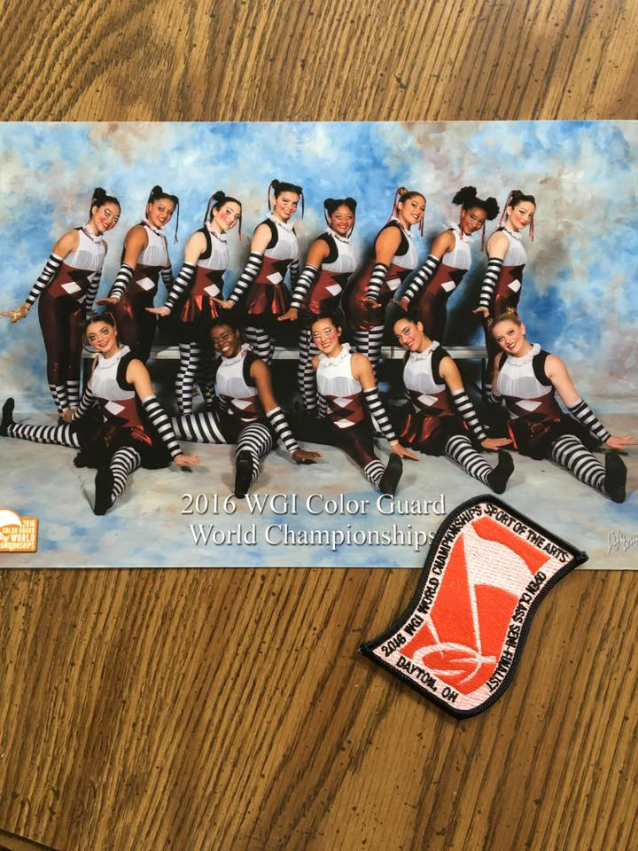
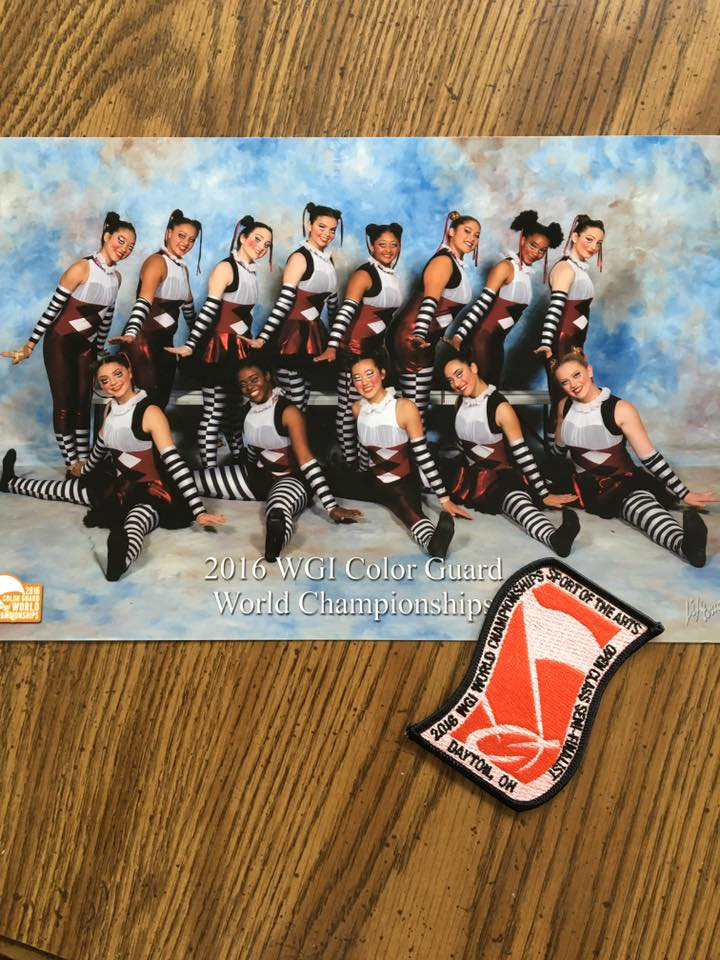

Pauline Tran
Student
I am currently a student at the University of California, Riverside. I have experience working as an IT intern and a server at a restaurant. I am very motivated and willing to learn new things. Being an IT intern was my first job, I learned a lot of things about working in teams and how every role is important even if it is minor.
I interned at ServiceNow the Cloud enterprise, I was put in the data management team. Everyday I worked there, I was always assigned three to five excel sheets a day to update. Other companies and businesses that use ServiceNow’s product constantly change their information or open smaller branches of their company. So I would make sure that their information was always updated. But I also learned that the IT field was not something I wanted to be in. I love interacting with people and working with different types of people of different backgrounds. That is one main reason why I majored in Global Studies.
For my second job, probably one of my favorite job experiences. I was a hostess at The Cheesecake Factory. I guided guests to their tables and was responsible for the workflow. I couldn’t seat customers too fast or too slow, and I had to make sure every server is not overwhelmed with customers. Even though it was not a big position like being a server,
Another job in food services that I enjoy is when I worked at a boba shop as a cashier and drink maker. The shop served all kinds of drinks like milk teas, fruit teas, smoothies and coffee. We also used to serve food like popcorn chicken, mozzarella sticks, and etc. I learned to work at under pressure and at a fast pace. I gained a lot of confidence working at the shop. Like how to interact with customers and difficult situations in the best manner. Which is one skill I deeply appreciate till this day.
Now I am at the University of California, Riverside studying Global Studies. I am still lost on what I want to pursue in my future career. I love working with people, so I have been looking up ambassador jobs. One job that I found is being a Foreign Service Officer, the job lets you travel and meet different people with different backgrounds. Interacting with other representatives from other countries to discuss important issues that might affect everyone. I am also interested in event planning. I have also loved art and grew up with an aunt who was an event planner and has helped her out on many occasions. I love the attention to detail and the joy in people’s faces when they see a beautifully well planned event.
I still have so much to learn and explore for my future career, being in a Global Studies major gives me the freedom to do so. I am excited to see what I will discover along the way at the University of California, Riverside.
Experience
Developer
• Update customer data
• Responsible for merging accounts
• Experience with ServiceNow Surf and Excelsheet
Hostess
• Responsible for seating guests
• Setting up tables for incoming guests
Color Guard Captain
• Trained 25 hours a week with 12 other girls
• Went to Nationals in Dayton, Ohio twice
• Won 4 state championship
Education
University of California Riverside
Portfolio


